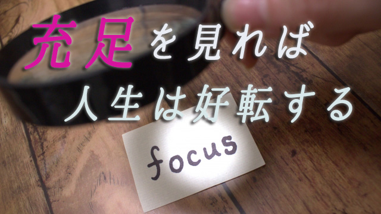

私たちは日常足りているものより足りていないものにフォーカスしがちだ。
「子どもがもっと熱心に勉強してくれたら」
「夫（妻）がもっと理解ある人だったら」
「経済的にもう少し余裕があったら」
「もう少し時間があれば○○できるのだが」
「もっと体が健康であれば」
などキリがないほど「不足」に焦点を当てている。ここで困るのは不足に焦点を当てるほど現実はその「不足している状況」を再現し続ける点にある。
なぜなら私たちは自分の現実は自分で創っているからだ。これは意識の焦点をどこに当てるかで私たちの現実も決まるということを意味している。意識を不足にフォーカスしている限り不足部分しか見えない。足りてる部分は見えないということだ。
「子どもが勉強しなくて困る」というとき「勉強しない」という不足部分に焦点を当てることで、その他の部分―たとえば興味あることには集中力を発揮するとか弟妹たちに優しく接するなど―は視界に入らない。
正確に言えば視界に入っていてもそれと認識できない。
実は私たちは見たいものしか見えない。たとえばカラーバス効果というのがある。赤いスポーツカーが欲しいというとき、外を歩くとやたら赤い車が目についたりする。普段はめったに目にしない赤い車が多いと感じる。旅行雑誌でハワイ特集を読んで関心をもったら、テレビでちょうどハワイ関連の番組をやっていたり、電車の中吊り広告でハワイの宣伝が目に飛び込んできたりする。
これは私たちが無意識に関心のあるもの（意識の焦点を当てているもの）を選択的に認識していることを表している。
だから他人の欠点（嫌な部分）ばかり気にする人には、欠点だらけの人が周囲にいるように感じるわけで「私の周りにはロクな人がいない」などと嘆くハメになる。「私は上司に恵まれない」と言う人も同じ。上司が代わってもやはり理不尽な目にあったりする。そして「ホラ、やっぱり」などと言う。
本当の原因は外側ではなく自分の見方にあることになかなか気づけない。
従ってこの現実から抜け出すのは簡単で、自分の現実は自分が創っていることに気づき不足に焦点を当てるのではなく「充足」に焦点を当てるという意識の転換を行えば良い。
充足を選択すれば充足が見えてくるということだ。
１．
子どものことに話を戻すなら、勉強しないという不足を見るのではなく先に言ったように集中力がある、弟妹に優しい、友だちに恵まれているなど満ち足りている要素にこそフォーカスするということだ。
同じく他人の欠点や嫌なところ、上司の理不尽さにばかり目をやるのではなく長所や評価すべきところもしっかり探してみる。
そうすれば嫌いだ苦手だと思っている人の中にも必ず良い点は見つかるものだ。その人を嫌な人に見立てているのは自分の中にある期待感であったり、こうすべきああすべきという自分なりの価値観や信念（偏り）のせいだと気づくだろう。
だから「自分の考え」という頑なな自我意識を溶かし、なるべく相手のあるがままを中立客観にながめること。その上で充足部分にフォーカスしてみる。すると「あの子も良いところがいっぱいあるのだな」とか「あの人も責任を背負って大変な思いをしているのだな」という共感する気持ちがわいてくる。
少し胸に温かい思いがわき上がればフォーカスはうまくいったということになる。
ここでのポイントは自我―自説への拘り、執着、好き嫌いの感情など―を極力抑えること。自分を透明な存在であるかのように感じることにある。
実際にやってみれば分かるが、このように「充足を見る」と決意し実行すれば相手の様子は変わる。あるいは自分と相手の関係性が変化する。つまり現実は変容する。
子どもはなぜか勉強するようになり理不尽な上司は配置換えになる。苦手な人とも話が通じ合えたり、理解してくれない夫（妻）との関係もそれなりに安定したりする。
２．
充足を見れば充足が見える。これはプラス思考をしろとか、他人の良いところを見てあげようとかの道徳的な話ではない。不足ばかりに注目しがちな私たちの「ゆがんだ認識」すなわち偏った見方を正し、本来のリアルな現実を、まさに物事のありのままの姿を捉えることに他ならない。
テレビや新聞を見れば日々悲惨なニュースが飛び込んでくる。これを見て「世間は大変なことばかり起こっている」と思うなら既に偏っている。
大変なことも起こっている一方で、素晴らしいこと善きこと心温まる出来事もその何千倍も起こっているからだ。
若者が老人に席を譲った。ボランティアで街のゴミ拾いをする人たちがいた。コンビニの店員が爽やかな笑顔で応対してくれた。
当たり前だがこんなことは決して報道されることはない。それでも日々無数に起こっている現実には違いない。そして私たちはこれらの「充足」をあまり平凡なこと、取るに足らないこととして見過ごしてしまう。
ある知人がこんな話をしてくれた。
「私は毎日床に就くとき、その日あった良いことに感謝するのです。今日も家族が皆無事に帰ってきたこと。子どもたちが元気で健康でいること。暖かい布団で眠れること…」この人はかつて大病をしたことをきっかけにそれまで気づかなかった毎日の平凡な日常に幸せを見るようになったという。
そのように過ごしているうちに人生が何となく好転することに気づいた。夫が昇進したり臨時収入があったり、前から関心のあった仕事を紹介されたりなど。
昇進や臨時収入はオマケとしても、この例は充足を見ることを習慣にすることで現実がどのように展開していくかを良く示していると思う。何よりこのようにささやかなことに充足を見い出していけば自分がいかに多くのもので「満たされていたか」に気づき、幸福感に包まれる。
今まで不足ばかりが目についていたときには気づかなかった（見ようとしていなかった）充足が、実は至るところにあり、それこそがリアルな現実であったという幸福感。
こうして充足に気づくほど自分をとりまく現実はますます充足していく。なぜなら私たちは見たいもの―意識をフォーカスしたもの―を見るからだ。
３．
私たちは日頃不足している物事に注目し「○○さえ手に入れれば幸せになれる」「もう少し○○でありさえすれば良いのに」と欠乏感から行動しがちだ。しかしその何かを手に入れても今度は失う恐れや、思ったほどの満足感が得られないなど「不足のループ」に陥り易い。
これまで見てきたように不足感から出発しても物事はうまくいかない。不足な現実を次々と見い出すだけだ。逆に充足感から出発すれば物事はうまく展開する。
だから私たちは努めて充足を見ること。意識の焦点を身の回りの充足に当てることが大切だ。それは現実逃避ではないし、不幸な事実を見ぬ振りをすることでもない。
病気や事故。人間関係や仕事上のトラブル。確かに人生には望ましくない出来事は起こる。だがそれ以上に私たちの周りには充足があふれていることを忘れてはならない。
愛する家族や信頼できる仲間がいること。夕暮れ時の街路樹の美しさ。ペットの柔らかな毛触り。平和な国に生まれた幸運…等々。
つまり私たちは充足に囲まれて生きている。充足は私たちにとってあまりにも当たり前に存在している故にかえって気づけないだけなのだ。
ちょうど水中に棲む魚が水の存在に気づかないように。
だがいったん「充足を見たい」と意図すればそれはすぐに見つかるだろう。先に言ったようにそれは至るところにあるからだ。こうして「満たされた感覚」を常に感じながら行動すること、すなわち充足から出発することが望ましい現実の創造につながる。
最初に私は自分の人生は自分が創っていると言った。それは不足を見て不平不満の人生を歩むのか充足を見て幸福な人生を歩むのか、その人が選択できるという意味だった。
つまりどちらも選べる自由があるということ。
これは考えてみれば朗報ではないか。いまの自分の現状（人生）にもし不満があるなら創り直せば良いということになるからだ。自由に人生は創り変えることができる。それはいつでも可能だ。そう思えば希望がわく。
その際鍵となるのが、いかに人生に充足を見い出していくかその姿勢である。
すなわち自分がいかに愛に包まれているか知ることにある。